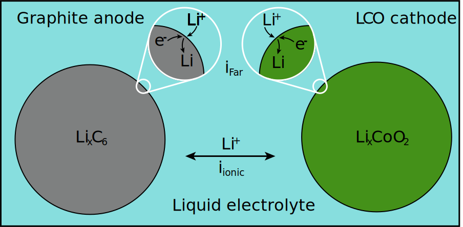

Note
Go to the end to download the full example code.
Lithium Ion Battery Discharge Curve#
In this example, we illustrate how to calculate the open circuit voltage (voltage when the external applied current is zero) for a lithium ion battery as a function of anode and cathode lithium content. The open circuit voltage here is calculated via two means: kinetically and thermodynamically.
The thermodynamics are based on a graphite anode and a LiCoO₂ cathode (the typical active materials for commercial batteries, as of 2019), and are modeled using the BinarySolutionTabulatedThermo class.
The system here can be thought of as consisting of two particles—anode and cathode—connected by a liquid electrolyte:
{kind=link}
For the sake of simplicity, we’re going to assume that the anode and cathode capacities are perfectly balanced. That is, if the cathode lithium content is X percent of its max possible (its capacity), then we will assume that the anode is at 1-X percent. Without loss of generality, we will define the anode composition.
The routine below returns the steady-state cell voltage of a lithium-ion cell for a given cell current, active material lithium stoichiometries, and electrolyte ionic resistance. This functionality is presented in greater detail in the reference (which also describes the derivation of the BinarySolutionTabulatedThermo class):
M. Mayur, S. C. DeCaluwe, B. L. Kee, W. G. Bessler, “Modeling and simulation of the thermodynamics of lithium-ion battery intercalation materials in the open-source software Cantera,” Electrochim. Acta 323, 134797 (2019), https://doi.org/10.1016/j.electacta.2019.134797
In the future, this example may be developed further to demonstrate simulating charge-discharge of the lithium ion battery.
Requires: cantera >= 2.6.0, matplotlib >= 2.0, scipy >= 1.10.0
Kinetic equilibrium calculations#
In the kinetic equilibrium problem, steady state is achieved when the faradaic current at each electrode (anode and cathode) surface and the ionic current through the electrolyte are all zero. There are, essentially, four relevant electric potentials which must be determined:
\(\phi_{\rm anode}\): electric potential of graphite anode.
\(\phi_{\rm elyte,\, anode}\): electric potential of electrolyte at anode interface.
\(\phi_{\rm elyte,\, cathode}\): electric potential of electrolyte at cathode interface.
\(\phi_{\rm cathode}\): electric potential of LCO cathode.
Setting one of these four to the reference potential of zero (because it is the difference in electric potential which drives currents, the actual potential values are irrelevant. Let’s assume the anode electric potential is zero), there is only one distribution of electric potentials across the cell such that the current is invariant across the cell. I.e. we want the potentials such that:
where \(i_{\rm app}\) is the user input for the applied current. For this example, we assume an applied current of 0, to calculate the equilibrium voltage.
Faradaic current#
The faradaic current for this model is calculated using Butler-Volmer kinetics. For a Li-ion battery, this is:
where \(S_{\rm elde}\) is the specific surface area of the electrode in question, \(F\) is Faraday’s constant, \(\beta\) is the charge-transfer symmetry parameter, \(R\) the universal gas constant, \(T\) the temperature, and \(\eta\) the overpotential, which is the electric potential difference between the electrode and electrolyte, \(\Delta \phi = \phi_{\rm elde} - \phi_{\rm elyte}\), relative to that at equilibrium, \(\Delta \phi_{\rm eq}\):
\(i_\circ\) is known as the “exchange current density,” which is equal to the rate of the forward and reverse current at equilibrium (which are equal). \(i_\circ\) and \(\beta\) are provided as user inputs in the YAML file. At any particular state, (user-specified electric potentials, pressure, temperature, and chemical compositions), Cantera calculates \(\eta\) as part of the routine to evaluate reaction rates of progress \(\left(\dot{q} = i_{\rm Far}/F \right)\). The user simply sets the state values mentioned above.
Ionic current#
The electrolyte is modeled as a resistor with user-defined ionic resistance \(R_{\rm io}\), and hence the ionic current is calculated as:
where positive current is defined as delivering Li\(^+\) to the anode interface. Given \(i_{\rm app}\), this equation can be inverted, to calculate the electric potential of the electrolyte at the cathode interface, relative to that at the anode interface:
Again: in this example, \(i_{\rm app} = 0\) and hence the two electric potential values in the electrolyte are equal.
Numerical routine#
For the kinetic routine, there are three processes to determine the cell voltage \(\phi_{\rm cathode} - \phi_{\rm anode}\) which corresponds to the user-provided \(i_{\rm app}\):
Determine the \(\phi_{\rm elyte,\,anode}\) value which corresponds to \(i_{\rm app}\), given \(X_{\rm Li, anode}\), the percentage of Li in the anode active material.
Determine \(\phi_{\rm elyte,\,cathode}\), given \(\phi_{\rm elyte,\,anode}\) and \(i_{\rm app}\).
Determine the \(\phi_{\rm cathode}\) which corresponds to \(i_{\rm app}\), given \(\phi_{\rm elyte,\,cathode}\) and \(X_{\rm Li, anode}\), the percentage of Li in the anode active material.
The routines below are written generally such that an interested user may set \(i_{\rm app}\) to any value of interest.
Import necessary packages#
import numpy as np
from scipy.optimize import fsolve
import time # Used for timing our calculations
import matplotlib.pyplot as plt
import cantera as ct
print(f"Runnning Cantera version: {ct.__version__}")
Runnning Cantera version: 3.1.0b1
Define the phases#
The phase thermodynamics are defined according to experimentally-measured open circuit voltage values, as described in the reference provided above. These values are stored in the input file lithium_ion_battery.yaml.
input_file = "../data/lithium_ion_battery.yaml"
anode = ct.Solution(input_file, "anode")
cathode = ct.Solution(input_file, "cathode")
# The 'elde' electrode phase is needed as a source/sink for electron
elde = ct.Solution(input_file, "electron")
elyte = ct.Solution(input_file, "electrolyte")
anode_interface = ct.Interface(
input_file, "edge_anode_electrolyte", [anode, elde, elyte]
)
cathode_interface = ct.Interface(
input_file, "edge_cathode_electrolyte", [cathode, elde, elyte]
)
Define battery conditions: temperature, pressure, stoichiometry, electrolyte resistance#
Inputs are:
Stoichiometries
X_Li_caandX_Li_an[-] (can be vectors)Temperature
T[K]Pressure
P[Pa]Externally-applied current
i_app[A]Electrolyte resistance
R_elyte[Ohm]Anode total surface area
S_an[m^2]Cathode total surface area
S_ca[m^2]
# Array of lithium mole fractions in the anode
X_Li_an = np.arange(0.005, 0.995, 0.02)
# Assume that the cathode and anode capacities are balanced
X_Li_ca = 1.0 - X_Li_an
# I_app = 0: Open circuit
I_app = 0.0
# At zero current, electrolyte resistance is irrelevant
R_elyte = 0.0
# Temperature and pressure
T = 300 # K
P = ct.one_atm
F = ct.faraday
# [m^2] Cathode total active material surface area
S_ca = 1.1167
S_an = 0.7824 # [m^2] Anode total active material surface area
Set phase temperatures and pressures#
Helper Functions#
def anode_curr(phi_l, I_app, phi_s, X_Li_an):
# Set the active material mole fraction
anode.X = {"Li[anode]": X_Li_an, "V[anode]": 1 - X_Li_an}
# Set the electrode and electrolyte potential
elde.electric_potential = phi_s
elyte.electric_potential = phi_l[0]
# Get the net product rate of electrons in the anode (per m2^ interface)
r_elec = anode_interface.get_net_production_rates(elde)
anode_current = r_elec * ct.faraday * S_an
diff = I_app + anode_current
return diff
def cathode_curr(phi_s, I_app, phi_l, X_Li_ca):
# Set the active material mole fractions
cathode.X = {"Li[cathode]": X_Li_ca, "V[cathode]": 1 - X_Li_ca}
# Set the electrode and electrolyte potential
elde.electric_potential = phi_s[0]
elyte.electric_potential = phi_l
# Get the net product rate of electrons in the cathode (per m2^ interface)
r_elec = cathode_interface.get_net_production_rates(elde)
cathode_current = r_elec * ct.faraday * S_an
diff = I_app - cathode_current
return diff
Run the calculations for all stoichiometries#
# Tic
t0 = time.time()
# Initialize array of OCVs
E_cell_kin = np.zeros_like(X_Li_ca)
for i, X_an in enumerate(X_Li_an):
# Set anode electrode potential to 0
phi_s_an = 0
E_init = 3.0
phi_l_an = fsolve(anode_curr, E_init, args=(I_app, phi_s_an, X_an))
# Calculate electrolyte potential at cathode interface
phi_l_ca = phi_l_an[0] + I_app * R_elyte
# Calculate cathode electrode potential
phi_s_ca = fsolve(cathode_curr, E_init, args=(I_app, phi_l_ca, X_Li_ca[i]))
# Calculate cell voltage
E_cell_kin[i] = phi_s_ca[0] - phi_s_an
# Toc
t1 = time.time()
print(f"{i:d} cell voltages calculated in {t1 - t0:3.2e} seconds.")
49 cell voltages calculated in 1.70e-02 seconds.
Plot cell voltage, as a function of the cathode stoichiometry#
fig, ax = plt.subplots()
ax.plot(100 * X_Li_ca, E_cell_kin)
_ = ax.set(ylim=[2.5, 4.3], xlabel="Li Fraction in Cathode (%)",
ylabel="Open Circuit Potential (V)")
Thermodynamic Equilibrium Calculation#
For the \(i_{app} = 0\) case, we can also calculate the voltage using thermodynamics. At equilibrium, the net electrochemical potential change of the reaction must be zero:
where \(\tilde{\mu}_k = \mu_k + z_kF\Phi_k\), where, in turn \(\mu_k = \frac{\partial g_k}{\partial n_k}\) is the chemical potential, \(\nu_k\) the net stoichiometric coefficient, \(z_k\) the net elementary charge, and \(\Phi_k\) the phase electric potential for species \(k\).
From this, we can calculate the equilibrium electric potential difference \(\Delta \Phi_{\rm eq} = \left(\Phi_{\rm elde} - \Phi_{\rm elyte}\right)_{\rm eq}\) as:
where \(\Delta g_{\rm rxn} = \sum_k \nu_k\mu_k\) is the chemical potential of the reaction and and \(n_{\rm charge} = \sum_{k,\,{\rm elde}} \nu_k z_k\) is the net elementary charge transferred from the electrolyte to the electrode.
# Tic
t0 = time.time()
# Initialize array of OCVs
E_cell_therm = np.zeros_like(X_Li_ca)
for i, X_an in enumerate(X_Li_an):
# Set anode electrode potential to 0
anode.X = "Li[anode]:" + str(X_an) + ", V[anode]:" + str(1 - X_an)
dG_an = anode_interface.delta_gibbs[0]
n_charge = 1.0
E_eq_an = -dG_an / n_charge / ct.faraday
cathode.X = "Li[cathode]:" + str(1.0 - X_an) + ", V[cathode]:" + str(X_an)
dG_ca = cathode_interface.delta_gibbs[0]
n_charge = 1.0
E_eq_ca = -dG_ca / n_charge / ct.faraday
E_cell_therm[i] = E_eq_ca - E_eq_an
# Toc
t1 = time.time()
print(f"{i:d} cell voltages calculated in {t1 - t0:3.2e} seconds.")
49 cell voltages calculated in 7.26e-04 seconds.
Plot thermodynamic OCV, and compare to results from kinetic method#
fig, ax = plt.subplots()
ax.plot(100 * X_Li_ca, E_cell_kin, label="Kinetic")
ax.plot(100 * X_Li_ca, E_cell_therm,
linewidth=0.0, marker="o", markerfacecolor="none", label="Thermodynamic")
ax.set(ylim=[2.5, 4.3], xlabel="Li Fraction in Cathode (%)",
ylabel="Open Circuit Potential (V)")
ax.legend()
As one would expect, the two approaches give identical results. While both methods are incredibly fast, the thermodynamic method is roughly 30 times faster.
A large part of this is that the thermodynamic approach is an analytical approach (i.e. the answer is known from theory), while the kinetic approach relies on the root-finding fzero method to fit the correct voltage. Note also that the kinetic method, because of the use of Butler-Volmer kinetics, calculates the thermodynamic voltage, in order to calculate the overpotential \(\eta = \Delta \Phi - \Delta \Phi_{\rm eq}\).
However, it is at last important to note that, while slower, the kinetic method is of course more robust, and can be used to find results away from equilibrium. The thermodynamic method is only applicable at equilibrium (zero current).
Total running time of the script: (0 minutes 0.445 seconds)